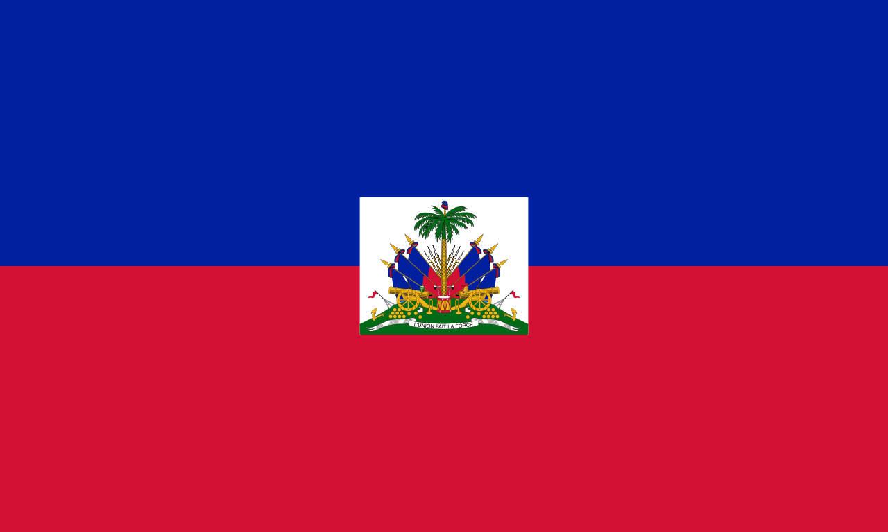
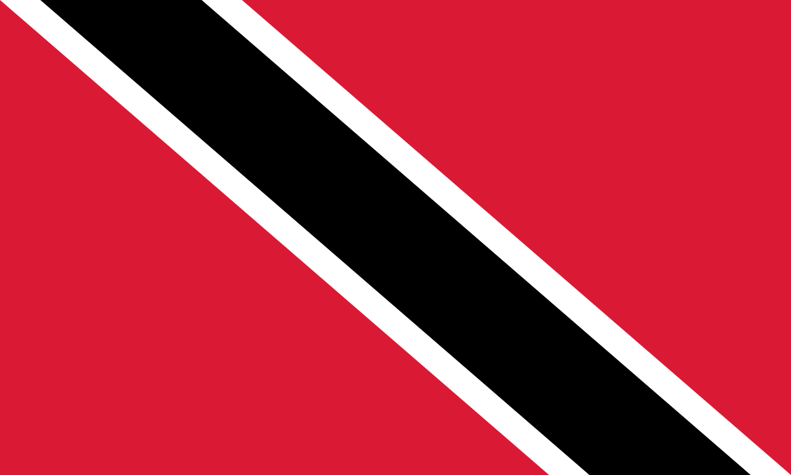
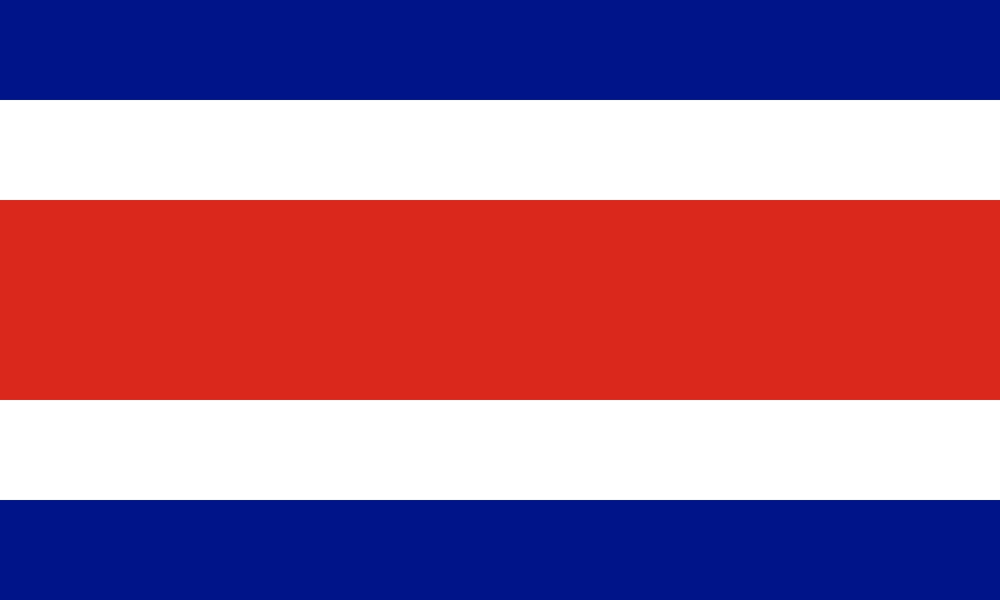
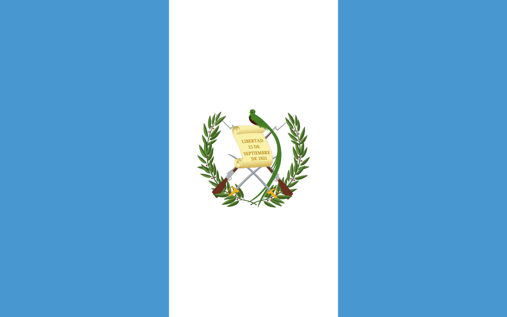

Észak-Amerika
Amerikai Egyesült Államok

Kanada

Mexikó
AMERIKAI EGYESÜLT ÁLLAMOK
Főváros
Washington DC.
Lakosság
kb 335 000 000 fő
Terület
9 629 091 km²
Államforma
Köztársaság
Pénznem
Amerikai dollár
Őslakók
Amerika őslakói, akik az indiánok és az inuitok, őseik az utolsó jégkorszak végén, a Bering-szoros helyén húzódó földhídon keltek át Ázsiából Amerikába, majd fokozatosan terjeszkedtek dél felé, több ezer év alatt benépesítve az egész kontinenst. Az európaiak bevándorlása során azonban az őslakos indiánokat egyre nyugatabbra szorították, elvették földjeiket, majd rezervátumokba kényszerítették őket, míg az USA déli államaiban található ültetvényeken Afrikából behurcolt rabszolgákat dolgoztattak. Napjainkban pedig a Latin-Amerikából bevándorló spanyol ajkúak, valamint az Ázsiából érkezők aránya nő dinamikusan.
Angol-Amerika
A gyarmatosítás következményeként Amerika kulturális tekintetben két részre osztható: az Angol-Amerika és Mexikó északi határától északra elterülő rész. Kanadában az angol nyelv mellett a francia is hivatalos, míg az Amerikai Egyesült Államokban nincs hivatalos nyelv, de a bevett gyakorlat alapján az angolra mégis ekként tekinthetünk. Az elmúlt évtizedekben azonban az USA-ban folyamatosan nőtt a spanyol anyanyelvűek aránya.
Városiasodás
Az amerikai népesség több mint háromnegyed része városlakó. Az urbanizáció nagyon gyors a kontinensen, ami együtt jár a városok területének terjeszkedésével és a vidéki lakosság városokba költözésével, így a városlakók száma folyamatosan növekszik. A vidéki településeken is terjed a városi életmód, és az infrastruktúra is fejlődik, ezáltal a vidék egyre városiasabbá válik. A nagyvárosokban általában van egy üzleti negyed, amelyet leromlott vagy éppen felújított lakóövezetek vesznek körül. A városokat laza beépítettségű, kertvárosias jellegű elővárosok szegélyezik.
Városiasodás
Az atlanti partvidék északi részén található BosWash területen, Bostontól Washingtonig, a nagyvárosok és elővárosaik egy hatalmas városhalmazt alkotnak, ami egy megalopolisznak nevezett terület. Itt több mint 50 millió ember él. A kontinens más részein magányos települések és farmok találhatók, melyek központjában lakóházak és gazdasági épületek állnak, amelyek általában egy-egy család tulajdonában vannak, és saját ellátásukon túl eladásra is termelnek.
Gazdaság
Az Amerikai Egyesült Államok gazdasági erejét és világgazdaságban elfoglalt helyét az óriásvállalatok és világmárkák jelképezik. Az USA napjainkban a legsokoldalúbb és legfejlettebb gazdasággal rendelkező ország. A világ GDP-jének mintegy negyedét állítja elő, és a világon kutatásra és fejlesztésre fordított összeg körülbelül 40%-át költik el. A New York-i Értéktőzsde a nemzetközi pénzvilág legjelentősebb központja. Az USA gazdasági elsősége hosszú évtizedeken keresztül megkérdőjelezhetetlen volt, azonban a dinamikusan fejlődő Kína mára komoly vetélytársává vált.
Szolgáltatások
Az USA gazdaságának vezető ága a szolgáltatások. Az aktív keresők mintegy 80%-a ebben a gazdasági ágban dolgozik, és innen származik az ország GDP-jének is mintegy 80%-a. Az USA gazdasági fejlődésének kezdetén a természeti erőforrások és a bevándorlók szolgáltak alapul. Ma már a tudományos kutatások és fejlesztések állnak az ország gazdasági fejlődésének alapjául, ahol a tudósok és mérnökök folyamatosan újabb és korszerűbb termékeket és szolgáltatásokat alkotnak. Az új, csúcstechnológiát alkalmazó ipari ágazatok (például az elektronikai ipar, a szoftvergyártás, a biotechnológiai ipar, az atomipar vagy az űripar) egyre inkább felváltják a nyersanyagigényes és hagyományos ipari ágazatokat.
A tudás kiemelt szerepe
A jelentős szerep, amelyet a tudás játszik az amerikai gazdaságban, a "tudásgazdaság" kifejezéssel jellemezhető. A Szilícium-völgy a kutatás és fejlesztés központja, ahol számos új technológia, például a mikroprocesszor és a személyi számítógép született. Az Amerikai Egyesült Államokban több mint 100 hasonló technológiai park működik, amelyek hozzájárulnak a tudásalapú társadalom kialakulásához. Az agyelszívás azonban szintén jelentős probléma, mivel a jobb kutatási feltételek és magasabb fizetések miatt sok külföldi dolgozó hagyja el az országukat.
Nyersanyagéhség
Az Amerikai Egyesült Államok a világ egyik legnagyobb nyersanyagfogyasztója, és az ásványi nyersanyagok egynegyedét fogyasztja el. Az USA számára fontos a külföldről behozott nyersanyagok beszerzése, például az érc Kanadából és Latin-Amerikából származik, míg a kőolajat Kanadából, Mexikóból, Venezuelából, Brazíliából és a Közel-Keletről importálják. Az energiaforrások között az atomerőművek, vízerőművek és a hőerőművek, amelyek kőszénnel fűtenek, szerepelnek. Az USA-ban kitermelt szénhidrogének, valamint az importált szénhidrogének is fontos szerepet játszanak az energiaszektorban.
Gazdasági térségek
Az Amerikai Egyesült Államok első iparvidékei az Atlanti-óceán partján és a Nagy-tavak környékén alakultak ki, de az idők során az ipari tevékenységek arculata jelentősen megváltozott. A hagyományos nehézipari ágazatok és a gépkocsigyártás helyét az új, csúcstechnológiát alkalmazó ipari ágazatok vették át. Az Észak-atlanti-partvidék legfontosabb városai közé tartozik a főváros, Washington, New York, a világ pénzügyi és kereskedelmi központja, valamint Boston, a kutatás-fejlesztés egyik fellegvára. A Nagy-tavak térségében található a fontos közlekedési csomópont, Chicago, és Detroit, amely az autógyártás egykori fellegvára, azonban az utóbbi évtizedekben hanyatlásnak indult.
Gazdasági térségek
Amerikai Egyesült Államok különböző régiói jelentős gazdasági tevékenységet folytatnak. Az ország déli államai az 1960-as években indultak el fejlődésnek, és ma már a Mexikói-öböl kőolaj- és földgáznyersanyagainak modern vegyipara is itt található. A déli térség azért is fontos, mert közel fekszik Latin-Amerikához, így kiemelt szerepe van az onnan érkező ásványkincsek és mezőgazdasági termények fogadásában és feldolgozásában. A Mississippi torkolatánál fekvő New Orleans az ország legnagyobb áruforgalmú kikötővárosa, míg Atlanta a déli térség egyik kiemelkedő ipari és pénzügyi központja, amely a világ egyik legforgalmasabb repülőterével rendelkezik. Dallas pedig korszerű vegyiparáról ismert, míg Houstonban található a NASA kutató-fejlesztő központja, ahol az űrhajósokat is képzik ki. Az űreszközök indítását azonban nem itt, hanem a Floridai-félszigetről végzik. Miami pedig kiemelt turisztikai célpont.
Gazdasági térségek
Az USA nyugati része a második világháborúban vált kiemelt jelentőségűvé. Az ott található Kordillerák és Sziklás-hegység érceire alumínium- és színesfémkohászat települt, melyekhez az energiát vízerőművek biztosítják. A kiterjedt erdőségek a fa- és papíripar alapjául szolgálnak, míg Alaszka és Kalifornia szénhidrogén-bányászata a vegyipar számára jelentős. A nyugati tengerparti sáv (Seattle környéke, illetve a San Francisco és Los Angeles közötti térség, benne a Szilícium-völggyel) ma leginkább kutató-fejlesztő intézeteiről nevezetes, és Los Angeles (Hollywood) a filmipar kiemelkedő központja, emellett pedig fontos kikötőváros.
Mezőgazdaság
Bár az USA mezőgazdasága kevesebb mint 2%-át foglalkoztatja, az ország a világ legnagyobb élelmiszer- és takarmányexportőre. A modern technológia alkalmazásával elért magas terméshozamoknak köszönhetően a nagy területű farmokon folyó mezőgazdasági termelés a természeti adottságokhoz igazodva övekbe rendeződött.
Híres amerikai emberek
George Washington
Abraham Lincoln
John Kennedy
Michael Jackson
Michael Jordan
Thomas Edison
Henry Ford
Leonardo DiCaprio
Amerikai gasztronómiai jellegzetességek
Buffalo wings
Pastrami és Reuben szendvics
Mac and cheese
Corn dog
Sajtburger
Barbeque
KANADA
Főváros
Ottawa
Lakosság
38 000 000 fő
Terület
9 984 670 km²
Államforma
Fedéralizált állam
Pénznem
Kanadai dollár
Erőfforrások
Kanada erősen kapcsolódik az Amerikai Egyesült Államokkal szoros gazdasági együttműködésben. Az ország elsősorban a természeti erőforrásai miatt játszik fontos szerepet a kapcsolatban. A világ második legnagyobb területű országa rendkívül gazdag érc- és erdőkészletekben. Az Egyesült Államok a legfontosabb vásárlója Kanada ásványi kincseinek és újságpapírjának. A gazdasági központok Toronto és Montréal, míg Ottawa fővárosa inkább csak közigazgatási szerepet tölt be.
Időjárás
A lakott területek időjárása Kanada déli részén hasonló Magyarországéhoz, csak valamivel szélsőségesebb. Nyáron átlagosan +30 Celsius fok, télen pedig körülbelül -15 Celsius fok a hőmérséklet. Azonban két fontos tényező befolyásolja az időjárást: nyáron a nagy tavak által okozott magas páratartalom miatt a +30 fok néha +40 foknak érződik, télen pedig a nagyon erős, hideg szél okozta "windchill" faktor miatt a valós hőmérséklet sokszor 10 fokkal hidegebbnek érződik.
Emberek
A világon ismert vendégszeretetéről híres Nagy Fehér Észak néven ismert országba nem véletlenül vágynak az emberek, nem csak azért, mert biztonságos és sokszínű, toleráns a látogatókkal szemben. A kanadaiak között ismert, hogy barátságosak és udvariasak. Annak ellenére, hogy Kanada hatalmas területtel rendelkezik, népessége alacsony, mivel nagy részét erdők borítják. Ezért a kanadaiak számára kiemelten fontos a természet tisztelete és a környezetvédelem. Az ország területén élő őslakosok számos erdőségben és vidéken élnek, és munkalehetőséget biztosítanak a kanadaiak számára.
Emberek
A nagyvárosokban koncentrálódik Kanada lakosságának 75%-a, mint például Toronto, Québec, Vancouver vagy Montreal, amelyek közel vannak az Egyesült Államok határához. Kanada etnikailag sokszínű, és két hivatalos nyelvet beszélnek: angol és francia, bár a lakosság 20%-a más nyelvet beszél. Az ország ünnepei hasonlóak az Egyesült Államokéhoz, és a Canada Day-n (július 1-én) ünneplik a függetlenségüket, valamint van egy jellegzetes ünnepük, a Victoria Day. A kanadaiak optimizmusa erős, bár a tél hosszú és hideg, és általában november és március között tart, de a kanadaiak téli sportokkal küzdenek és nagyon szenvedélyesek a hokival kapcsolatban, ami összekovácsolja őket.
Ételek
Az étkezési szokások változóak Kanadában régiók szerint, attól függően, hogy milyen helyi források állnak rendelkezésre. A halételek, szarvas-, bölény- és szárnyas húsok országszerte népszerűek, és a legtöbb desszert juharsziruppal ízesítik. A juhar nagy jelentőséggel bír a kanadaiak számára, hiszen a zászlójukon a juharlevél motívum szerepel. Néhány jellegzetes kanadai étel a bacon, amelyet juharmázzal vonnak be, és a Fisherman's brewis, ami halat és pirított kenyeret jelent. Néhány európai fogás is elterjedt bizonyos régiókban, mint például a lengyel pierogi és a kielbasa, és a kínai és gyors ételek is népszerűvé váltak az elmúlt évtizedben. A Canada Day alkalmából különleges tortát készítenek a kanadai zászló mintájával.
Híres kanadai emberek
Justin Bieber
Michael J. Fox
Justin Trudeau
Michael Bublé
Avril Lavigne
Shania Twain
Neil Young
Justin Timberlake
Michael Cera
MEXIKÓ
Főváros
Mexikóváros
Lakosság
kb. 126 000 000
Terület
1 964 375 km²
Államforma
Köztársaság
Pénznem
Mexikói peso
Mexikóról
Mexikó főként az olcsó munkaerő miatt vesz részt gazdasági együttműködésben, ahol az "amerikai" cégek számos leányvállalatot, főként gépjármű-összeszerelő üzemeket, vegyipari cégeket és varrodákat alapítottak Mexikó északi határa mentén.
Emberek
Mexikó emberei nagyon vendégszeretők és melegszívűek. A család fontos szerepet játszik az életükben, és büszkék a gyökereikre és hagyományaikra, amit különleges alkalmakkor ünnepelnek. Bár szeretnek szórakozni és táncolni, a fiatalok kevésbé függetlenek, mint más országokban, mivel tradicionális és biztonsági okok miatt szigorúbb szabályok vannak velük szemben.
Mexikóban számos népcsoport él, köztük a meszticek (kevert származásúak), az európai mexikóiak (európai ősökkel rendelkezők), 62 indián törzs, arab-mexikói és afro-mexikói közösségek, amelyek sokszínűvé és változatossá teszik az országot.
Emberek
A hivatalos nyelv a spanyol, de országszerte beszélnek számos őslakos nyelvjárást is. A lakosság többsége katolikus, de számos más keresztény vallás is képviselteti magát. Az országban jelentős gazdasági és társadalmi különbségek vannak, amelyek láthatóak az emberek öltözködésén, életmódján és anyagi javak birtoklásán. Az erőszak és a közbiztonság kérdése kulcsfontosságú a mindennapi életben, de nem minden terület életveszélyes.
Ételek
A mexikói konyha alapját három fő alapanyag adja: kukorica, chili és bab. Ezek nélkül szinte elképzelhetetlen egyetlen étel sem. A reggeli általában könnyű, és általában 7 és 10 óra között fogyasztják. Általában kávé, gyümölcs, pirítós vagy kalács tartozik hozzá. Néhány család előnyben részesíti a tartalmasabb reggelit, amely magában foglalhat rántottát és tortillát. A nap legfontosabb étkezése az ebéd, amely általában 2 és 4 óra között van, és 3-4 fogásból áll. Ez általában leves vagy saláta, rizs vagy tészta hússal (néha tortillával és babgal is), majd desszert követi. Ebédidőben mindig tartanak egy kis pihenőt, amikor még a családdal vagy barátokkal beszélgetnek az étkezés után. A vacsora késő este történik, általában 8 és 10 óra között, és édes péksüteményt, kávét, tejet és néha levest vagy tacót tartalmaz.
Ételek
A tipikus mexikói tortilla egy kerek, vékony, kukoricalisztből készült palacsintaszerű lepény, amelyet gyakran hússal vagy más alapanyagokkal töltik meg, összehajtanak vagy feltekernek, és végül quesadilla vagy taco lesz belőle. Mexikóban több mint 100 féle chilipaprika található, és a mexikói ételek általában nagyon fűszeresek és csípősek. Ezért érdemes lassan fogyasztani és fokozatosan megszokni az ízüket, hogy elkerüljük a gyomorproblémákat.
Híres mexikói emberek
Hernan Cortes
Miguel Hidalgo
Benito Juarez
Emiliano Zapata
Francisco Madero
Jose Vasconcelos
Diego Rivera
Frida Kahlo
Karib-térség
Antigua és Barbuda

Bahama-szigetek
Barbados
Dominikai Közösség
Dominikai Köztársaság
ANTIGUA ÉS BARBUDA
Főváros
St. John's
Lakosság
kb. 97 000 fő
Terület
442 km²
Államforma
Alkotmányos monarchia
Pénznem
East Caribbean dollar
BAHAMA-SZIGETEK
Főváros
Nassau
Lakosság
kb. 387 000 fő
Terület
13 940 km²
Államforma
Parlamentális monarchia
Pénznem
Bahamai dollár
BARBADOS
Főváros
Bridgetown
Lakosság
kb. 285 000 fő
Terület
431 km²
Államforma
Köztársaság
Pénznem
Barbadosi dollár
DOMINIKAI KÖZÖSSÉG
Főváros
Roseau
Lakosság
kb. 72 000 fő
Terület
750 km²
Államforma
Köztársaság
Pénznem
Kelet-karibi dollár
DOMINIKAI-KÖZTÁRSASÁG
Főváros
Santo Domingo
Lakosság
kb. 11 000 000 fő
Terület
48 730 km²
Államforma
Köztársaság
Pénznem
Peso
Emberek
Az emberek a Dominikai Köztársaságban nagyon büszkék az országukra és a hagyományaikra. Az oktatás, az udvariasság és a társadalmi szokások nagyon fontosak számukra, és csak lassan fogadják el a változásokat. Az emberek beszédhangjukkal és heves gesztikulálásukkal külföldiek számára veszekedésnek tűnhetnek, de ez csak az ő kommunikációs stílusuk. A lakosság nagy része európai, afrikai és őslakos származású, és a római katolikus vallás játssza a legfontosabb szerepet a társadalomban. Az országban gazdag és szegény rétegek között jelentős különbségek vannak, és a szegénység sokfelé jelen van.
Ételek
Az ételek között a reggelikhez mangút, sült fehér sajtot, tojást és szalámit esznek, az ebédek pedig általában a "la bandera dominicana" nevű ételből állnak. A vacsorák hasonlóak a reggelikhez, de gyakran trópusi gyümölcsökkel kiegészítik őket. Az import élelmiszerek drágák és luxusnak számító dolgok. Szokás megosztani az ételt másokkal, és illetlenségnek számít, ha valaki nem kínálja meg az ételét a többiekkel.
Grenada
Haiti
Jamaica
Kuba
Puerto Rico

GRENADA
Főváros
St. George's
Lakosság
103 328 fő
Terület
344 km²
Államforma
Alkotmányos monarchia
Pénznem
Kelet-karibi dollár
HAITI
Főváros
Port-au-Prince
Lakosság
10 729 000 fő
Terület
27 750 km²
Államforma
Köztársaság
Pénznem
Gourde
JAMAICA
Főváros
Kingston
Lakosság
2 729 000 fő
Terület
10 991 km²
Államforma
Köztársaság
Pénznem
Jamaicai dollár
KUBA
Főváros
Havanna
Lakosság
kb. 11 350 000 fő
Terület
110 860 km²
Államforma
Köztársaság
Pénznem
Kubai peso
PUERTO RICO
Amerikai Egyesült Államok társult állama
Főváros
San Juan
Lakosság
3 193 000 fő
Terület
9 104 km²
Államforma
Autonómia
Pénznem
Amerikai dollár
Saint Kitts és Nevis

Saint Lucia

Saint Vincent és a Grenadine-szigetek

Trinidad és Tobago
SAINT KITTS ÉS NEVIS
Főváros
Basseterre
Lakosság
kb. 52 000 fő
Terület
261 km²
Államforma
Köztársaság
Pénznem
Kelet-karibi dollár
SAINT LUCIA
Főváros
Castries
Lakosság
kb. 180 000 fő
Terület
617 km²
Államforma
Parlamentális monarchia
Pénznem
Kelet-karibi dollár
SAINT VINCENT ÉS A GRENADINE-SZIGETEK
Főváros
Kingstown
Lakosság
kb. 110 000 fő
Terület
389 km²
Államforma
Köztársaság
Pénznem
Kelet-karibi dollár
TRINIDAD ÉS TOBAGO
Főváros
Port of Spain
Lakosság
kb. 1 500 000 fő
Terület
5 128 km²
Államforma
Köztársaság
Pénznem
Trinidadi dollár
Közép-Amerika
Belize

Costa Rica
Guatemala
Honduras

BELIZE
Főváros
Belmopan
Lakosság
kb. 400 000 fő
Terület
22 966 km²
Államforma
Köztársaság
Pénznem
Belize-i dollár
COSTA RICA
Főváros
San José
Lakosság
kb. 5 000 000 fő
Terület
51 100 km²
Államforma
Demokratikus Köztársaság
Pénznem
Costa Rica-i colon
Emberek
A Costa Rica-i emberek nagyra tartják a hagyományos értékeket és hazafiasak, ugyanakkor nem agresszívan. Nem tűrik az arroganciát, inkább a szerénységet értékelik. Fontos számukra mások véleménye, ezért próbálnak megfelelni a társadalmi elvárásoknak, különösen a nőknek fontos az erkölcsi tisztaság megőrzése. A kis országban a közösségi élet erős, mindenki ismeri mindenkit, a katolikus vallás pedig nagy szerepet játszik, bár teljes vallásszabadság van.
Érdemes tudni, hogy kb. 20% a szegénységi küszöb alatt élők aránya. A costa ricaiak nagyon segítőkészek, és nem utasítanak el nehéz feladatokat sem, ha segíteni tudnak. Az önzőséget és az erős individualizmust elítélik. Az idővel szemben nagyon rugalmasak, általában nem érkeznek pontosan, és a találkozókra való késés természetesnek számít.
Ételek
Az ételeiket a rizs és a bab alkotja, melyeket minden nap esznek. A Costa Rica-i konyha változatos, és tartalmazza a friss gyümölcsöket és zöldségeket, gyümölcsléket, burgonyát, tojást, kukoricát, tejet, sajtokat és más tejtermékeket. Az ételek általában könnyűek reggelire, tartalmasabbak ebédre, és a családok számára a vacsora ideje, amikor megbeszélik a nap történéseit. Az ételek élvezetéhez nagy jelentőséget tulajdonítanak, ezért az étkezések hosszabb időt vehetnek igénybe. A hús is fontos része a costa ricai konyhának, de sok családnál nem mindennapos, mivel drágább.
GUATEMALA
Főváros
Guatemalaváros
Lakosság
kb. 17 000 000 fő
Terület
108 889 km2
Államforma
Köztársaság
Pénznem
Guatemalai quetzal
HONDURAS
Főváros
Tegucigalpa
Lakosság
kb. 10 200 000 fő
Terület
112 492 km2
Államforma
Köztársaság
Pénznem
Hodurasi lempira
Emberek
Hondurasi emberek barátságosak és könnyen ki tudnak jönni másokkal. Vendégszeretőek és nagylelkűek, ha valaki ebédidőben meglátogatja őket, biztosan meghívnak rá ebédre. Még a szegényebb családok is mindent megtesznek annak érdekében, hogy a vendégeiknek semmiben ne szenvedjenek hiányt náluk. A fiatalok szívesen töltik együtt szabadidejüket, kirándulnak, buliznak, vagy egymást látogatják. Randizás inkább ritka, ismerősöknél előforduló találkozóként értelmezhető, de a tinédzserek szívesen járnak moziba, diszkóba és egyéb programokra. Sportokat csak kevesen kedvelnek. Pontosság nem igazán jellemző a baráti találkozókon, csupán az iskolában, templomban vagy fontosabb ünnepekkor, esküvőn. A római katolikus vallás a legelterjedtebb, de többféle vallás is fellelhető. Az emberek nagy része a mestizo csoportba tartozik (ami spanyol és indiai keveréket jelent), de indiai, kaukázusi és afro-hondurasi emberek is élnek itt. Bár sokan indián származásúak, csak néhányan beszélik az ősi nyelvet és követik az indián szokásokat.
Ételek
Az egyik legismertebb hondurasi étel a baleada nevű tortilla. Az alapételek a bab, rizs, tortilla, sült banán, baromfihús, különféle tészták, hondurasi tejföl és friss sajt. Bár egész évben van friss zöldség és gyümölcs, az itt élők nem étkeznek túlzottan egészségesen, nagyon szeretik a szénhidrátot és a mélyhűtött ételeket. Reggelente tápláló ételeket fogyasztanak, például tojást, sült vagy pürésített babot, sült banánt, tortillát, hondurasi tejfölt, sajtot és kávét. Az ebéd legtöbbször baromfihúsból, rizsből, krumpliból és tésztából áll, és dél és 1 óra között fogyasztják. A vacsora könnyedebb, általában délután 6 és 7 óra között eszik. Az étkezés nem számít közös összejövetelnek Hondurason, az emberek gyorsan esznek és általában nem étkeznek együtt a családdal. Az étel vagy ital elutasítása illetlenég.
Nicaragua

Panama

Salvador
NICARAGUA
Főváros
Managua
Lakosság
kb. 6 000 000 fő
Terület
129 494 km²
Államforma
Demokratikus Köztársaság
Pénznem
Nicaraguai córdoba
PANAMA
Főváros
Panamaváros
Lakosság
kb. 4 000 000 fő
Terület
75 517 km²
Államforma
Demokratikus Köztársaság
Pénznem
Dollár
Emberek
Panama népessége mintegy 3 millió fő, amelyből 1 millióan a fővárosban, Panama City-ben élnek. Általánosságban a késés nem okoz nagy aggodalmat, mivel ez a kultúra része. Még nehéz helyzetekben is megőrzik humorukat. Az amerikai kultúra jelentős hatása észlelhető Panamában, ahol az amerikai éttermek, üzletek, zene, divat, TV műsorok és filmek elárasztják az országot. Panama City modern és magas épületeivel akár amerikai nagyvárosnak is tűnhet. Az ország hivatalos fizetőeszköze az amerikai dollár.
A fiatalok az idejük nagy részét tanulással, tévénézéssel, zenehallgatással és barátaikkal töltik. A hétvégéiket általában bulizással vagy valamilyen társasági eseményen való részvétellel töltik. A legnépszerűbb sportok a baseball, a labdarúgás és a kosárlabda. Sajnos, a sportlétesítmények és ifjúsági szervezetek a legtöbb közösségben nem megfelelően kiépítettek. A randizás Panamában nem létezik, mivel mindkét fél szülői beleegyezése szükséges a kapcsolat kezdéséhez. A fiúknak engedélyt kell kérniük a lány szüleitől, mielőtt találkozhatnak vele. Kárhoztatják azt, aki időt tölt egy ellenkező nemű személlyel anélkül, hogy az hivatalos párja lenne. A szülők általában nem engedik lányaiknak, hogy 18 éves kor előtt párjuk legyen.
Ételek
Az ételek tekintetében, a panamai reggeli általában sült kukoricalepényből áll, amelyet tojással, hússal és más összetevőkkel töltenek meg. Gyakori a gyümölcs, rántotta vagy pirítós fogyasztása, és természetesen a jó panamai kávé sem hiányozhat. Az ételek elengedhetetlen részét képezi a rizs, amit naponta kétszer is fogyasztanak. Az ételek általában húst, rizst, babot, zöldségeket és főzhető banánt tartalmaznak. A tengerparti területeken sok friss tengeri gyümölcsöt és trópusi gyümölcsöt (mint például mangó, ananász és kókusz) készítenek.
SALVADOR
Főváros
San Salvador
Lakosság
kb. 6 000 000 fő
Terület
21 041 km²
Államforma
Demokratikus Köztársaság
Pénznem
Salvadori colon
Ellenőrizd a tudásod Észak-Amerikáról!
ZÁSZLÓ KITALÁLÓ
FŐVÁROS KITALÁLÓ
SOROLD FEL!